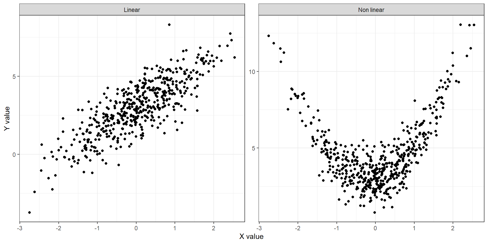
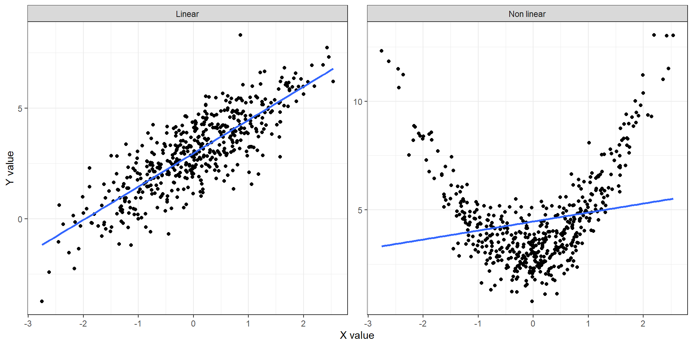
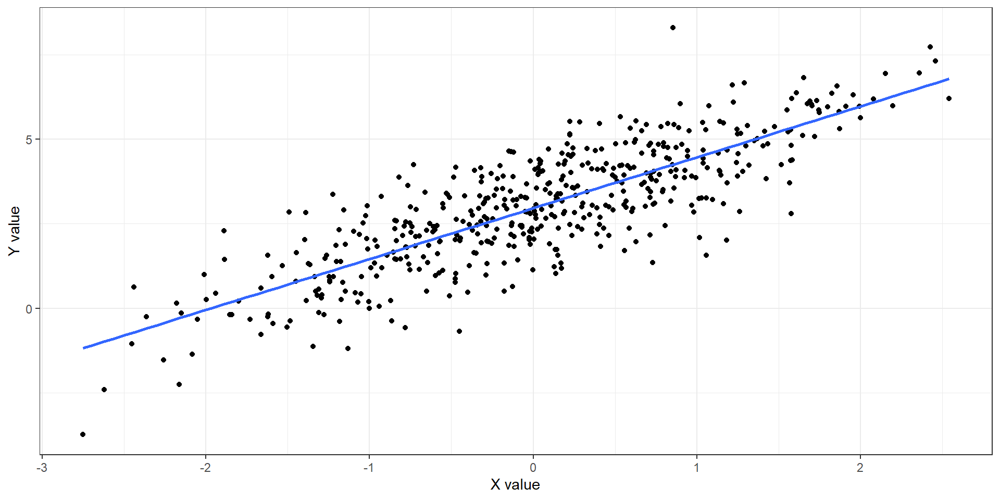
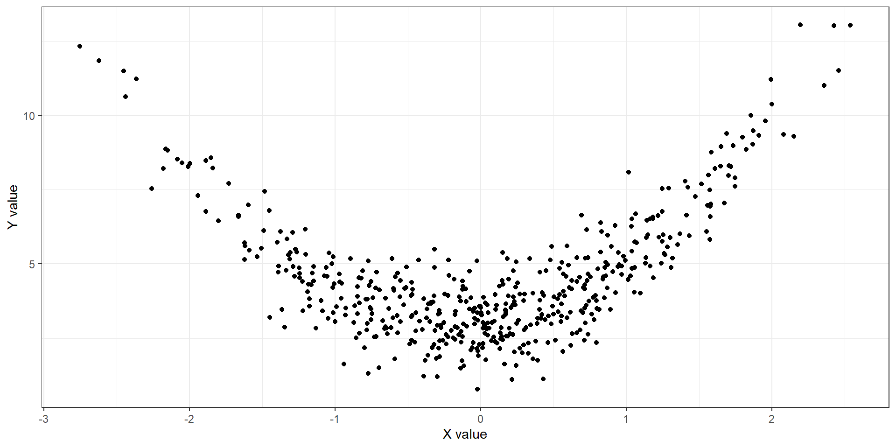
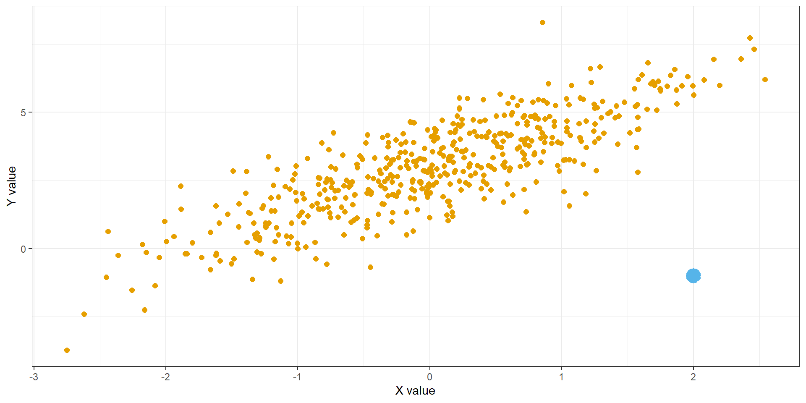
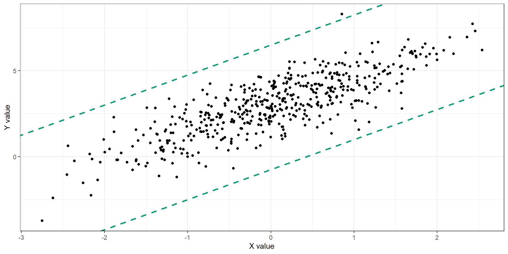

We can also use hypothesis tests to investigate whether the regression coefficients are significantly different from zero.
Null hypothesis
\[
H_0: \beta_1 = 0
\]
Alternative hypothesis
\[
H_0: \beta_1 \neq 0
\]
If the slope is zero, there is no linear association between \(X\) and the mean response \(Y\).
If we find evidence against the null hypothesis, this suggests that \(X\) is linearly associated with \(Y\).
A non-significant result does not prove that there is no relationship. It means that the data do not provide sufficient evidence of a non-zero linear slope.
summary(my_model)## ## Call:## lm(formula = sales ~ TV, data = advertising)## ## Residuals:## Min 1Q Median 3Q Max ## -8.3860 -1.9545 -0.1913 2.0671 7.2124 ## ## Coefficients:## Estimate Std. Error t value Pr(>|t|) ## (Intercept) 7.032594 0.457843 15.36 <2e-16 ***## TV 0.047537 0.002691 17.67 <2e-16 ***## ---## Signif. codes: 0 '***' 0.001 '**' 0.01 '*' 0.05 '.' 0.1 ' ' 1## ## Residual standard error: 3.259 on 198 degrees of freedom## Multiple R-squared: 0.6119, Adjusted R-squared: 0.6099 ## F-statistic: 312.1 on 1 and 198 DF, p-value: < 2.2e-16
How well does the model fit?
How well does the model explain the variation in the response?
Two common measures are:
Residual standard error (RSE)
The coefficient of determination (\(R^2\))
The residual standard error measures the typical size of the residuals.
\[
RSE=\sqrt{\frac{RSS}{n-2}}
\]
where \(RSS\) is the residual sum of squares and \(n\) is the sample size.
A smaller RSE indicates that observations tend to lie closer to the fitted regression line.
A larger RSE indicates more variation around the fitted line.
The \(R^2\) statistic measures the proportion of variation in the response variable that is explained by the regression model.
\[
R^2=\frac{TSS-RSS}{TSS}
\]
\(TSS=\sum_{i=1}^{n}(y_i-\bar{y})^2\)
\(RSS=\sum_{i=1}^{n}(y_i-\widehat{y}_i)^2\)
\(R^2 = 0.20\): The model explains 20% of the variation in \(Y\)
Assumption 1: Linearity
We assume that the expected response changes linearly with the predictor:
\[
E(Y_i \mid X_i = x_i) = \beta_0+\beta_1 x_i
\]
This means that a one-unit increase in \(X\) corresponds to the same change in the expected response, regardless of the starting value of \(X\)

Assumption 1: Linearity
We assume that the expected response changes linearly with the predictor:
\[
E(Y_i \mid X_i = x_i) = \beta_0+\beta_1 x_i
\]
This means that a one-unit increase in \(X\) corresponds to the same change in the expected response, regardless of the starting value of \(X\)

Assumption 1: Linearity
What should we look for
Is a straight line a reasonable summary of the relationship?

Assumption 1: Linearity
What should we look for
Is a straight line a reasonable summary of the relationship?
Is there evidence of curvature?

Assumption 1: Linearity
What should we look for
Is a straight line a reasonable summary of the relationship?
Is there evidence of curvature?
Are there observations that look unusual?

Assumption 1: Linearity
What should we look for
Is a straight line a reasonable summary of the relationship?
Is there evidence of curvature?
Are there observations that look unusual?
Is the spread of the observations reasonably similar across the range of \(X\)?

Assumption 2: Constant variance
We assume that the errors have the same variance for all predictor values:
The spread of observations around the regression line should be approximately constant across the range of the predictor
What if we violate it?
If the variance changes with the predictor, out estimates can still be unbiased under suitable conditions, but the usual standard errors and inference may be unreliable.
Assumption 3: Independence
We assume that the errors from different observations are independent.